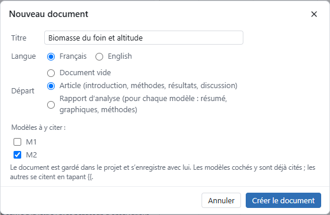
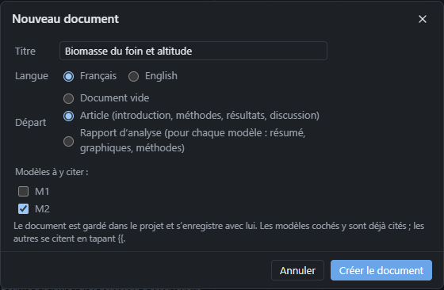
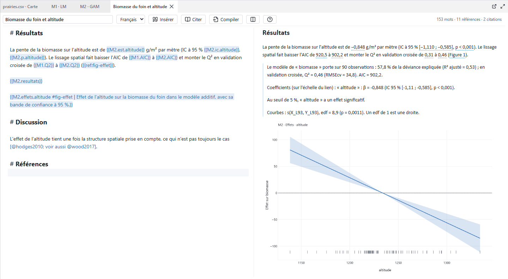
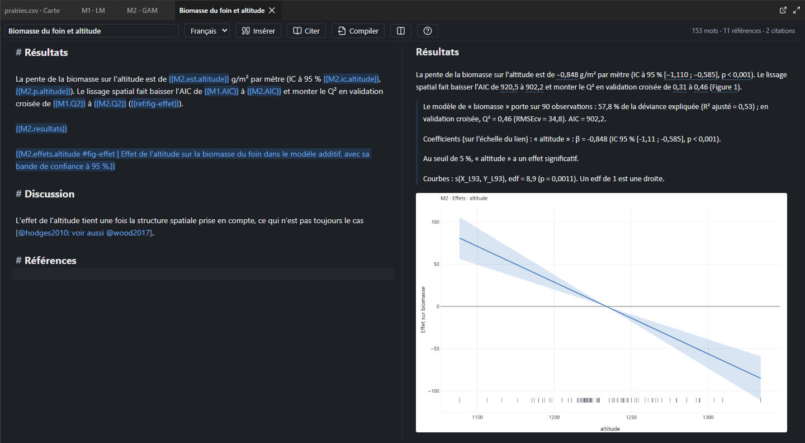
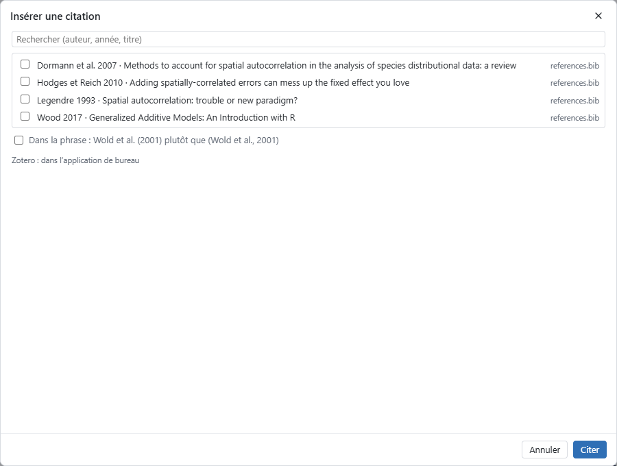
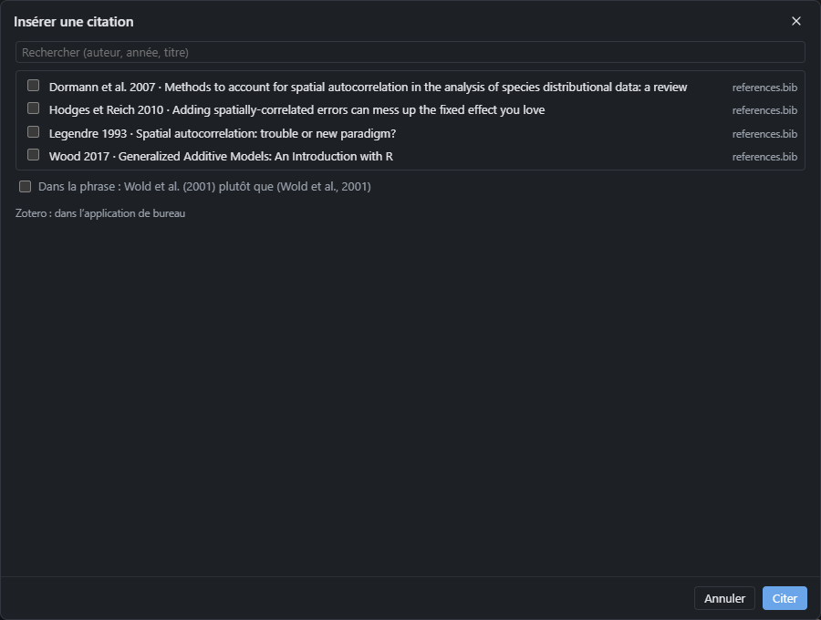
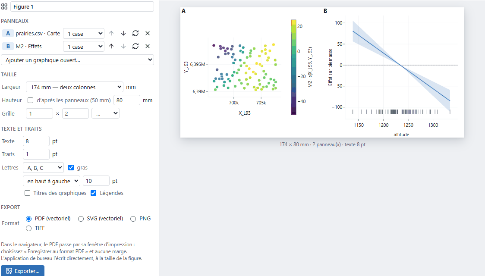
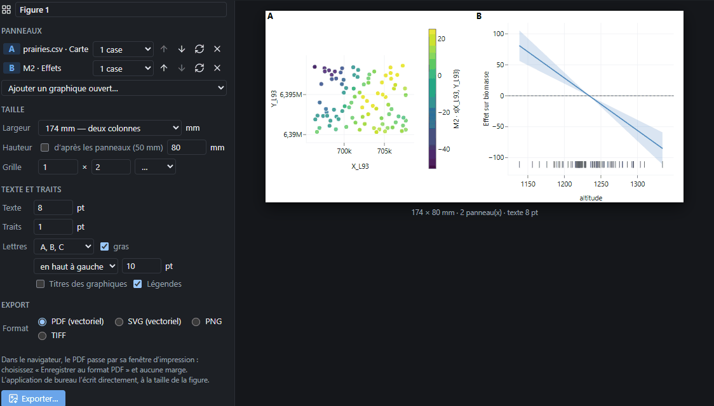
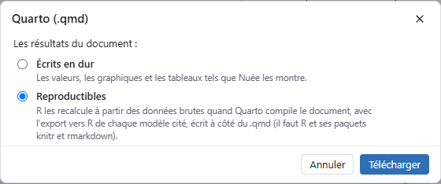
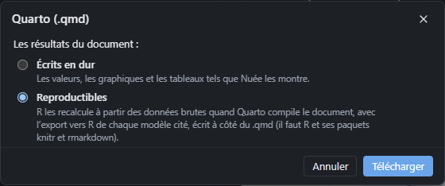

Un rapport, des modèles à l'article
Les prairies du tutoriel des cartes mises en forme : des valeurs qui suivent les modèles, les textes des méthodes et des résultats, des citations d'un fichier BibTeX, une figure de deux panneaux à la taille d'une revue, Word et PDF, et un fichier Quarto dont R recalcule les nombres.
Avant de commencer. Ce tutoriel rédige l'étude du tutoriel des cartes, sur ses données simulées : le projet des prairies avec ses coordonnées, l'altitude et ses deux modèles, M1 (la régression linéaire) et M2 (le modèle additif avec un lissage spatial). Si vous commencez ici, faites d'abord ses étapes 1 à 5. Téléchargez ensuite references.bib dans le dossier de prairies.csv : quatre références sur l'autocorrélation spatiale et les modèles additifs, telles que Zotero ou JabRef les exportent.
1. Un nouveau document
Fichier › Nouveau document (ou clic droit sur le projet dans l'explorateur). Donnez-lui un titre, choisissez sa langue, qui règle l'écriture des nombres (0,46 en français, 0.46 en anglais) et celle du texte des méthodes, puis partez d'un Article, avec M2 coché parmi les modèles à citer.




Cliquez sur Créer le document. Il s'ouvre dans un onglet à lui : le texte à gauche, en Markdown
(# Titre, *italique*, **gras**, listes, tableaux), et son aperçu à droite, redessiné à mesure
que vous tapez. L'article a ses titres (Introduction, Matériel et méthodes, Résultats, Discussion,
Références), le texte des méthodes de M2, une phrase avec deux de ses valeurs, son texte des
résultats et un graphique. Le document est gardé dans le projet et enregistré avec lui.
2. Citer les résultats
Les résultats d'un modèle se citent entre doubles accolades ; l'aperçu montre leur valeur. Dans les résultats, écrivez :
La pente de la biomasse sur l'altitude est de {{M2.est.altitude}} g/m² par mètre (IC à 95 %
{{M2.ic.altitude}}, {{M2.p.altitude}}). Le lissage spatial fait baisser l'AIC de {{M1.AIC}}
à {{M2.AIC}} et monter le Q² en validation croisée de {{M1.Q2}} à {{M2.Q2}}
({{ref:fig-effet}}).
L'aperçu donne :
La pente de la biomasse sur l'altitude est de −0,848 g/m² par mètre (IC à 95 % [−1,110 ; −0,585], p < 0,001). Le lissage spatial fait baisser l'AIC de 920,5 à 902,2 et monter le Q² en validation croisée de 0,31 à 0,46 (Figure 1).




- Une valeur :
{{M2.Q2}},{{M1.AIC}},{{M2.N}}; le coefficient d'une régression,{{M2.coef.altitude}}(l'estimation, son intervalle et p), ou ses parties,est,icetp. Après deux-points, les décimales ({{M2.Q2:3}}) ou un pourcentage ({{M2.deviance_expliquee:%}}). - Un bloc, seul sur sa ligne : le texte des méthodes
{{M2.methodes}}, celui des résultats{{M2.resultats}}, un tableau{{M2.table.coefficients | légende}}, ou un graphique du modèle, comme dans sa fenêtre :{{M2.effets.altitude #fig-effet | Effet de l'altitude sur la biomasse…}}. Les figures et les tableaux sont numérotés dans l'ordre ;#fig-effetétiquette celle-ci, et{{ref:fig-effet}}écrit « Figure 1 » dans le texte. - Taper
{{liste les modèles du projet, puis ce qu'offre celui qu'on choisit, avec sa valeur actuelle ; Insérer, dans la barre d'outils, fait de même par des menus.
Les valeurs suivent les modèles : réajustez M2 sur des données corrigées, et le document dit les nouveaux nombres. Une référence qui ne se résout pas est en rouge, avec la raison au survol.
3. Des citations d'un fichier BibTeX
Citer › Lier un fichier BibTeX ou CSL-JSON… : choisissez references.bib. L'en-tête reçoit
bibliography: references.bib, relatif au dossier du projet, comme Quarto le lit, et la barre
d'état dit references.bib : 4 références. Les citations s'écrivent comme dans Quarto :
[@legendre1993; @dormann2007]donne (Legendre, 1993 ; Dormann et al., 2007) ;@hodges2010, dans la phrase, Hodges et Reich (2010) ;[voir @wood2017, chap. 5], avec un préfixe et une page.
Taper @ liste les références ; Citer › Insérer une citation… les propose avec une recherche :




La liste des références vient à la fin, sous le dernier titre quand c'est « Références », dans un
style auteur–date ou numéroté (Citer › Style des citations). Avec Zotero ouvert sur cet
ordinateur, ses bibliothèques sont cherchées aussi. Le texte des méthodes cite ses propres
références (Nuée, R, mgcv, Wood 2003…), que cette liste ne contient pas : Modèle › Texte pour la
section Méthodes les donne ; ajoutez celles que vous gardez à votre .bib.
4. Une figure à la taille d'une revue
Un document montre les graphiques d'un modèle un par un. Une revue demande les figures en fichiers à part, à sa taille. Mettez la carte au premier plan, colorée par M2 · s(X_L93, Y_L93) comme à la fin du tutoriel des cartes, puis Graphiques › Composer une figure… : le compositeur prend le graphique du premier plan en panneau A ; Ajouter un graphique ouvert… : M2 · Effets, panneau B. Choisissez une largeur de 174 mm (deux colonnes), une hauteur de 80 mm (décochez d'après les panneaux), un texte de 8 pt.




Exporter… l'écrit en PDF ou SVG vectoriels, la page exactement de 174 × 80 mm, ou en PNG ou TIFF à 300 ou 600 points par pouce : 4110 × 1890 pixels à 600 points par pouce, le TIFF compressé par LZW, sans perte, comme les revues le demandent. La figure est gardée dans le projet (dans l'explorateur, sous Figures) et prend toujours le dernier ajustement de chaque modèle.
5. Word et PDF
Compiler › Word (.docx)… écrit le document avec ses valeurs, sa figure et sa liste de références,
dans les styles de Word (titres, légendes), pour continuer dans Word ; PDF…, des pages prêtes à
envoyer ; HTML…, une seule page, graphiques compris. Le titre de l'en-tête YAML les coiffe ; une
ligne {{< pagebreak >}} commence une nouvelle page.
6. Un fichier Quarto que R recalcule
Compiler › Quarto (.qmd)… écrit le document pour Quarto, qui le met en forme dans le style d'une
revue (csl: dans l'en-tête). Ses résultats sont soit écrits en dur, comme Nuée les montre,
soit reproductibles :




Reproductible, le .qmd vient avec un dossier du même nom terminé par _R : l'export vers R de M1
et de M2 (Fichier › Exporter vers R), chacun avec ses données en CSV, et nuee.R. Le premier
bloc du .qmd relance les deux scripts ; chaque valeur devient une expression R qui lit la valeur
recalculée et l'écrit comme Nuée :
La pente de la biomasse sur l'altitude est de `r nuee_coefficient(M2$coefficients, "altitude", "est")`
Corrigez une valeur dans un CSV, compilez à nouveau, et tous les nombres que R écrit suivent. Ce que les scripts ne recalculent pas reste écrit en dur, et le premier bloc le dit en commentaire : ici les textes des méthodes et des résultats, et l'effet de l'altitude, un graphique que le script ne trace pas (la barre d'état dit 3 des 10 références restent écrites en dur). Avant d'écrire, Nuée relance les scripts et vérifie que chaque expression redonne la valeur qu'il montre. La compilation demande Quarto, et R avec ses paquets knitr et rmarkdown ; si Quarto est installé, Compiler › Compiler avec Quarto la lance depuis Nuée, en Word, PDF ou HTML.
Pour aller plus loin
- Le gabarit Rapport d'analyse écrit, pour chaque modèle coché, son résumé, ses graphiques et son texte des méthodes.
csl: style.csldans l'en-tête donne à Quarto le style de citation d'une revue, copié à côté du.qmd.- Fichier › Rapport du modèle fait un rapport PDF ou Word d'un modèle, sans rédaction.
- Le guide : les documents, les citations et Quarto, les figures pour publication.